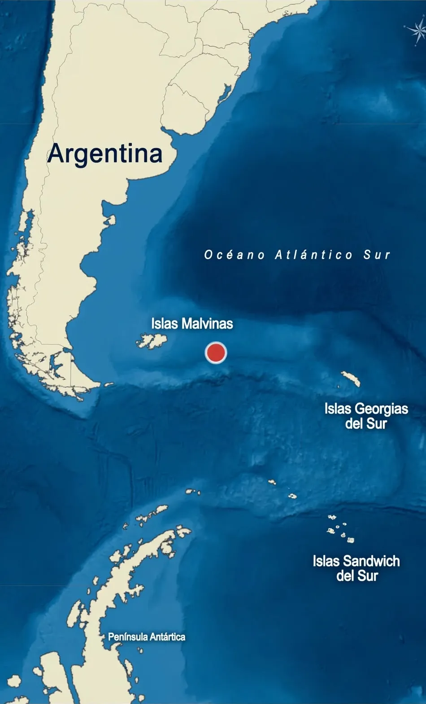

Argos Georgia: the tragedy that exposes the British Government of the Malvinas Islands
In July 2024, a fishing vessel sank some 190 nautical miles —almost 350 kilometres— east of Port Stanley, in the Malvinas Islands. Thirteen crew members died. Two years later, an official British report reveals that the tragedy could have been avoided: there were technical failures, negligence in the emergency and a fatal delay in calling for help. The case, almost unknown in Argentina, shows the inability of the island government to safely administer a maritime space that does not belong to it.

Malvinas — GLOBALpatagonia Report
Little is known in Argentina about what happened to the Argos Georgia. The news received limited coverage in the major national media, and the official report by the United Kingdom's Marine Accident Investigation Branch (MAIB) —published 26 months after the accident— went almost unnoticed by the public. Yet its importance is enormous: it not only documents the deaths of 13 people, but exposes a chain of technical and operational negligence, and reveals how fragile the control that the British Government of the Malvinas Islands exercises over fishing activity in the South Atlantic really is.
What happened: the sequence of a catastrophe
The Argos Georgia was a 54-metre longline fishing vessel, flagged in St Helena (a British overseas territory) and operated by Argos Froyanes Limited, a company with Anglo-Norwegian capital. She was sailing from Port Stanley to the Patagonian toothfish grounds near South Georgia with 27 crew on board: ten Spaniards, eight Russians, five Indonesians, two Peruvians and two Uruguayans.

On 22 July 2024, at around 13:00, the line hauling hatch on the starboard side, which should have been closed, “opened unexpectedly”, letting in a massive amount of water. The MAIB report concludes that the hatch's manual securing mechanism “had probably not been applied” and that the crew could not close it once open. In addition, the hatch's drive mechanism had “an unidentified design weakness” and had been modified without following a formal approval process that could have detected potential deficiencies.
The water spread quickly because the internal watertight doors were open, a practice that, according to the report, compromised the vessel's stability. The Argos Georgia progressively heeled to starboard, lost propulsion and finally sank.
The delay that cost lives
One of the report's most damning findings concerns the emergency response. The MAIB concludes that the crew did not issue a formal distress alert (Mayday) in the early stages of the casualty. Instead, the captain first communicated through WhatsApp with other vessels and with the company ashore.
According to the reconstruction of events, water began to enter at around 13:00, but the captain did not raise the alarm on WhatsApp until 13:45. The official distress alert was not issued until almost 15:30, nearly two and a half hours after the flooding began. The report notes that this informal communication “reduced the initial understanding of the seriousness of the event” and delayed the activation of an adequate response, since ashore it was believed the situation could still be “controlled or stabilised”.
This delay, according to the MAIB, “reduced the likelihood of rescue assets arriving in daylight” and drastically shortened the operational margin for an effective intervention. Of the 27 crew, 14 were rescued alive and 13 died, some during the abandonment of the vessel and others in the liferafts, victims of exposure to cold water.
The shadow of illegality: licences without safety
The MAIB report also made a specific recommendation to the Government of the Malvinas Islands. It urged it to improve its maritime search and rescue (SAR) communications capability so as to establish “direct and reliable” contact with vessels in distress within its area of responsibility. This official recommendation confirms that the communications system of the island rescue coordination centre was not effective enough, a factor that, added to the delay in the alert, contributed to the fatal outcome.
But the criticism goes beyond the emergency response. The Argos Georgia operated under a fishing licence granted by the British authorities of the Malvinas Islands. The vessel was one of four that benefited from a unilateral extension of licences by Great Britain within the framework of CCAMLR (the Commission for the Conservation of Antarctic Marine Living Resources), a process that, from the Argentine perspective, lacks any legitimacy.
The Argentine Government has been clear on this: the licences issued by the island government are illegal. To fish in the waters surrounding the Malvinas, vessels should also hold Argentine authorisation, which they do not. This is no minor detail. As South Atlantic expert César Lerena has pointed out, fishing activity in the area “violates not only current Argentine legislation (Law 24,922) but also the United Nations Convention on the Law of the Sea”, and costs the country some 250,000 tonnes of fishery resources every year.
A silenced event that exposes the fragility of island control
Despite the magnitude of the tragedy and the forceful conclusions of the official report, little is known in Argentina about what happened to the Argos Georgia. The news received limited coverage in the major national media, and the MAIB report —published 26 months after the accident— went almost unnoticed by the public. Yet its importance is enormous, because it not only documents the deaths of 13 people, but shows the inability of the islands' government to exploit that maritime space without providing the minimum safety guarantees.
The British agency's own recommendation to the Malvinas Government to improve its SAR communications is a tacit admission that the archipelago lacks the suitable means to coordinate a major rescue. The absence of an ocean-going patrol vessel in the area, the reliance on private fishing vessels for rescue tasks and the delay in activating the operation reveal a fisheries administration system that puts licence revenue above the lives of the crew.
In other words: the island government arrogates to itself the right to grant fishing permits in disputed waters, but cannot guarantee the safety of those who operate under those permits. The Argos Georgia tragedy is the most eloquent proof that this unilateral exploitation is, besides being illegal, unsustainable from a humanitarian standpoint.
Why it matters today
The Argos Georgia tragedy is far more than a maritime accident. It is the rawest evidence of a system that puts the exploitation of a valuable resource —Patagonian toothfish— above the safety of the people who extract it and above international legality.
The MAIB report, made public 26 months after the accident, confirms that technical failures and poor emergency management were decisive. But it also exposes an uncomfortable question: can a government that grants fishing licences in disputed waters guarantee the safety of those who operate under those licences? In light of the facts and of the British agency's own official recommendation, the answer appears to be no.
For Argentina, the case reinforces a historic position: exploiting South Atlantic resources under a unilateral licensing scheme is not only illegal, but also creates a risky environment for seafarers. As long as the United Kingdom and the island government keep administering the fishery without a framework of cooperation with the Argentine State, tragedies like that of the Argos Georgia will remain a latent possibility.
The memory of the 13 crew members who died demands more than a technical report. It demands a deep review of a model that, today, continues to operate illegally and without the minimum safety guarantees that any activity at sea should have.